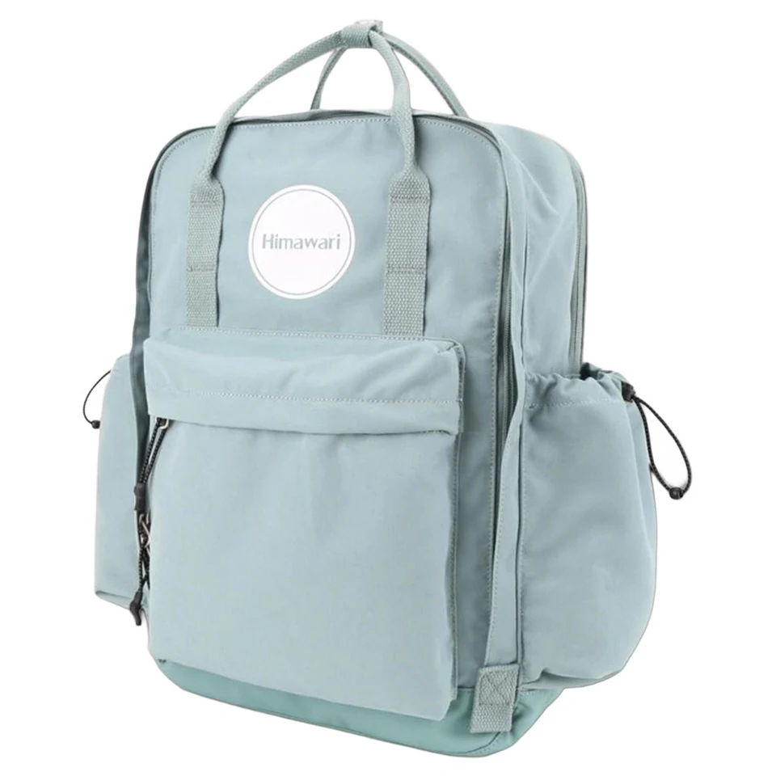

퇴근길 장을 보는 날: 백팩을 더 채우기 전에 나눌 짐

출근할 때는 알맞았던 가방이 퇴근길에 물건 몇 개를 사면 갑자기 좁아집니다. 남은 공간을 끝까지 채우기 전에, 원래 짐과 새로 생길 짐을 나눠 생각해 보세요. 돌아오는 길을 준비하면 계산대 앞에서 백팩을 전부 다시 정리하는 일을 줄일 수 있습니다.
출발 전에 살 물건의 모양을 떠올리기
작은 생활용품인지, 부피가 큰 상자인지에 따라 필요한 자리가 다릅니다. 사야 할 물건을 짧게 적고 백팩에 이미 있는 노트북과 서류가 차지하는 공간을 봅니다. 접이식 보조 가방을 가져갈 경우 펼쳤을 때의 크기와 손잡이 상태도 확인하세요. 작은 파우치 안에 접힌 크기만 보고 담을 양을 정하지 않는 것이 좋습니다.
백팩에 남길 짐을 먼저 정하기
업무 기기와 서류는 원래 자리를 유지하고, 누를 수 없거나 새기 쉬운 구매품은 별도로 운반할 방법을 마련합니다. 차갑거나 뜨거운 식품은 일반 백팩의 기능으로 보관 조건을 대신할 수 없습니다. 해당 물품에 필요한 운반 방법을 따르고, 공간이 부족하면 구매량이나 이동 계획을 조정합니다.
계산대에서는 단단한 것부터 살펴보기
상자의 모서리와 병, 포장이 튀어나온 물건이 기존 짐을 누르는지 확인합니다. 백팩에 넣을 작은 물건도 메인 지퍼가 자연스럽게 닫힐 정도로만 담습니다. 별도 가방을 쓴다면 손잡이가 비틀리거나 바닥이 과하게 처지지 않는지 보고, 한 손에 계속 무리가 느껴지면 짐을 줄이거나 다른 이동 방법을 선택하세요.
보조 가방을 백팩에 매달지 않기
손이 비는 것처럼 보여도 구매품이 든 가방을 백팩 지퍼나 장식 고리에 매달면 흔들리고 연결 부위에 힘이 집중될 수 있습니다. 본래 안내된 용도 이외로 쓰지 말고 각 가방의 손잡이와 착용 방식을 따르세요. 귀가하면 산 물건을 먼저 꺼내고 접이식 가방도 비워 상태를 확인합니다. 다음 장보기를 위해 접어 두는 것은 깨끗하고 마른 뒤에 합니다.
참고·안내
- Himawari No.1089 제품 정보
- Himawari No.1089 실제 제품 사진입니다. 구매한 물건의 운반 가능 여부는 실제 크기와 무게로 확인하세요.
자주 묻는 질문
접이식 가방만 있으면 많이 사도 되나요?
가방의 크기와 허용 사용 조건, 직접 들 수 있는 무게를 함께 봐야 합니다. 짐이 늘어날 것이 확실하면 구매량과 운반 방법부터 정하세요.
백팩에 빈 공간이 조금 남아 있으면요?
눌려도 되는 물건인지, 기존 기기와 서류를 밀지 않는지 확인하고 지퍼를 힘주어 당기지 않아도 닫히는 만큼만 넣으세요.